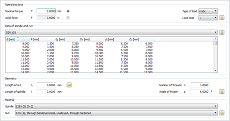
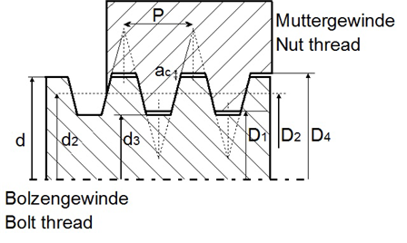
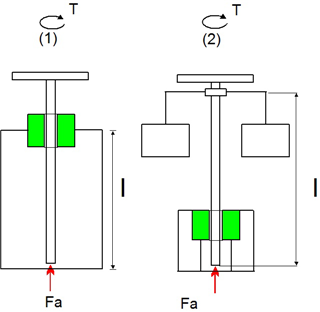

|
|
|


线性驱动机构
使用此计算模块计算驱动螺杆。驱动螺杆用于将旋转运动转换为纵向运动或产生巨大的力。
尽管梯形丝杠几乎专用于驱动螺杆，但某些粗重工况也会使用锯齿螺纹。

图 60.1：线性驱动机构基本数据

图60.2：梯形丝杠的尺寸
可以计算两种不同的线性驱动机构配置：
螺旋压机中主轴的应力
闸阀中主轴的应力

图60.3：线性驱动机构应力案例
Roloff Matek [80] 中提供的信息用于计算线性驱动（驱动螺杆）。
Linear Drive Train
Use this calculation module to calculate drive screws. Drive screws are used to convert rotational movement into longitudinal movement or to generate great forces.
Although trapezoidal screws are almost exclusively used as drive screws, some rough operations also use buttress threads.
Figure 60.1: Linear drive train basic data
Figure 60.2: Dimensions of trapezoidal screws
Two different linear drive train configurations can be calculated:
Stress on the spindle in a spindle press
Stress on the spindle in a gate valve
Figure 60.3: Linear drive train stress cases
The information provided in Roloff Matek [80] is used to calculate linear drives (drive screws).